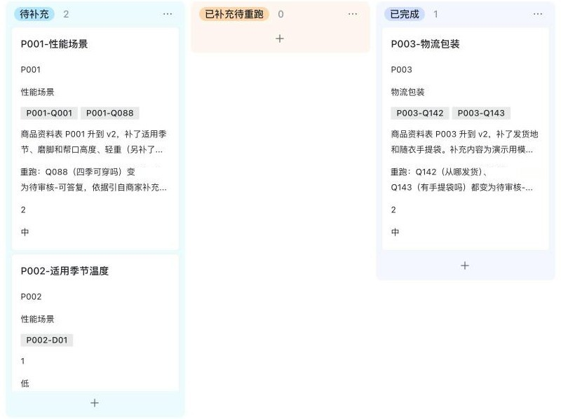
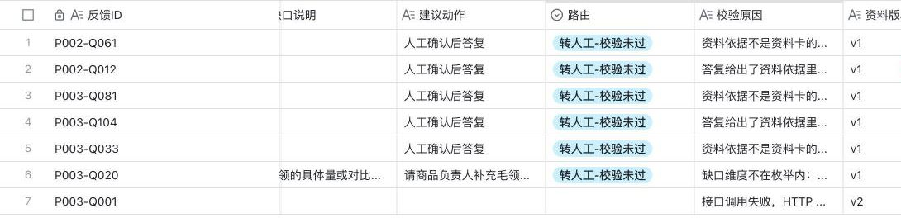

飞书 + Dify 售前咨询 AI 自动化工作流
商家内部用的一条流程。买家提问进飞书多维表格后，Dify 判断详情页资料能否回答，能答就起草带原文依据的答复，答不了就指出具体缺什么。运营审核确认缺资料，飞书自动建补资料任务，资料升版后重跑复测。
独立项目负责人 · 飞书多维表格（自动化流程、HTTP 请求、公式、查找引用与关联字段）、Dify（LLM 节点、Python 代码节点、API、DSL）、Python
- 数据
- 3 个真实商品的 372 条买家提问，抽取 51 条开展评测
- 流程
- 3 条联动自动化，串联提问分析到升版复测
- 校验
- 未通过即清空答复转人工，23 项单测通过
- 版本对比
- 同一模型，开发集主类判断 24/30 → 27/30
- 诊断用例
- 11 条，查出斤与公斤未换算的错答，加规则后答错放行 0 条
- 闭环复测
- 模拟补齐资料后，已补缺口的 17 条中 12 条由不可答转为可答
问答区里藏着详情页的缺口
买家问的很多问题详情页根本答不了。客服只能凭经验一条条回，页面上那块空缺也一直没人补。我选了匡威帆布鞋、李宁赤兔 9 PRO、波司登羽绒服三个在售商品，把“问大家”里的 372 条提问整理成问题池，每个商品抽 17 条做评测。资料卡只收详情页原文，页面没写的一律算未知。
51 条里能用详情页原文答出来的只有 13 条。缺得最多的是性能和适用场景，比如能不能跳绳体考、四季能不能穿、会不会磨脚。
读页面时发现的具体问题
- 匡威的尺码表里，38 码和 39 码都标 24.5 厘米。
- 李宁标题写“无板”，问答区却有买家说“有碳板”，详情页没有澄清。
- 波司登的尺码建议用公斤，买家几乎都按斤问；适用温度、能否机洗、从哪发货都没写。
- 匡威商家在问答区解释过经典款和 1970 款的区别，详情页上没有。
一条提问是怎么走完的
这是线上工作流实际跑出来的一条记录，买家一句话问了两件事。运营全程只在飞书里操作，一次分析大约 5 秒写回。这一版只在内部流转，不直接回复买家。
- 飞书运营点“AI 分析”按钮触发自动化，按商品 ID 取当前版本的资料正文
- 反馈 ID
P002-D01- 提问原文
- 尺码表里42码是多少毫米？这双鞋适合秋天穿吗
- 资料版本
- v1
- 飞书 → DifyHTTP 同步调用动态传入提问和资料，同步返回，不做回调
POST https://api.dify.ai/v1/workflows/run {"inputs":{"feedback_text":"…","product_context":"…"},"response_mode":"blocking","user":"feishu"} - Dify · LLM拆成子问题，逐个判断glm-4-flash-250414，温度 0.1，JSON 输出，最多 3 个子问题。右侧按写回字段还原
- Dify · 代码校验并汇总整体状态整体状态由程序按子问题推导，不让模型自己报
- 原文片段
- 两个 quote 都逐字出现在提问里 通过
- 资料依据
42=265逐字出现在资料卡里 通过- 缺口词表
- “适用季节温度”在性能场景的词表内 通过
- 整体状态
- 部分可答
- 飞书按 JSON 路径写回写回时同时记下资料版本和提示词版本
- 路由
- 待审核-部分可答
- 答复草稿
- 42码是265毫米。
- 具体缺口
- 适用季节温度
- 任务键
P002-适用季节温度（公式字段）- 版本
- 资料 v1 · 提示词 v6.3
- 运营审核采纳已答部分，缺口部分标记“需补资料”审核结论是人工判断的入口。模型只提建议，补不补资料由运营确认。
- 飞书自动建任务按商品和具体缺口新建，或关联到已有未完成任务改进任务表新增
P002-适用季节温度，关联这条反馈，状态“待补充”，优先级按关联反馈数自动算。 - 飞书资料升版、重跑验收商品资料表改版本号，提问重新分析任务
P003-物流包装走完了这一步。两条提问判为缺资料，自动建任务，资料升到 v2 后重跑，两条都变成可答，任务验收关闭。
模型输出后面的那段代码
模型的判断不能直接进表。代码节点逐字核对引用，检查结构和缺口词表，拦住资料没有的承诺和推出来的建议。有一项不过，答复清空，转人工。
下面运行的就是线上这段校验逻辑，我把 Python 代码节点移植到了浏览器里，用 23 项单测的全部输入加 6,000 条随机用例和 Python 原版比对，输出字段完全一致。你可以直接改模型输出，或者点下面的按钮模拟模型犯错，右侧会实时给出飞书将写回的结果。
查看资料卡（这个商品详情页的原文）
样例按线上写回的字段还原成模型输出的格式。
飞书这一侧怎么搭
三条自动化靠反馈表上的字段联动。这版飞书自动化没有条件分支，也不能循环处理关联记录，下面几处设计都是在这个约束里做的。
| 自动化 | 触发 | 动作 |
|---|---|---|
| AI 分析 → Dify 写回 | 点击按钮字段 | 查商品资料表，POST Dify，按路径写回 16 个输出里需要的字段 |
| 需补资料 → 新建改进任务 | 审核结论=需补资料，同类未完成任务为空，关联任务为空 | 改进任务表新增一条，任务 ID 取任务键 |
| 需补资料 → 挂到已有任务 | 审核结论=需补资料，同类未完成任务不为空，关联任务为空 | 按任务键找到未完成任务，把这条反馈挂上去 |
“有就挂，没有就建”拆成两条互斥的流程
“同类未完成任务”是一个查找引用字段，用任务键去改进任务表里找状态不是已完成的记录。两条流程的触发条件里，这个字段一条要求为空，一条要求不为空，同一时刻只会有一条成立。
两条都带“关联任务为空”，已经挂过的反馈不会重复触发。任务完成后“同类未完成任务”变空，旧反馈也不会再建新任务。
| 关联任务为空 | 已有关联任务 | |
|---|---|---|
| 没有同类未完成任务 | 新建任务 | 不触发 |
| 有同类未完成任务 | 挂到已有任务 | 不触发 |
按具体缺口归并
任务一开始按“商品 + 缺口大类”归，一个“性能场景”任务里同时挂着耐穿和四季能不能穿，补了季节信息也关不掉。我把缺口拆到 10 个维度下的 35 个具体项，任务键直接用具体缺口，任务才能一项一项验收。
任务键 = CONCATENATE([商品ID],"-",IF(ISBLANK([具体缺口]),[缺口维度],[具体缺口])) 优先级 = IF([关联反馈数]>=3,"高",IF([关联反馈数]=2,"中","低"))
接口失败时看返回内容，不看状态码
Dify 工作流内部失败时 HTTP 仍是 200，401 时飞书运行日志也显示成功，表格里会被写进一堆空值。写回时我判断返回内容里的运行状态，失败就把状态写成“异常”并记下原因。我把请求地址临时改错实测过，这条记录进了“转人工与异常”视图。
状态 = IF(第3步.body.data.status="succeeded","待审核","异常")
校验原因 = IF(第3步.body.data.status="succeeded", outputs.check_reasons,
CONCATENATE("接口调用失败，HTTP 状态码 ", 第3步.status_code))


工作流按文件管理
提示词和校验代码都放在本地改，先跑单测，再用脚本生成 Dify 的 DSL 文件整个导入，不在网页上手改，线上和本地不会对不上。写回时记录提示词版本，每条结果都能查到是哪一版跑出来的。中途 OpenAI 的免费额度用完，我换成智谱的免费模型，流程和校验都没动，只改了生成参数。
没有用飞书自带的 AI 字段，因为它接不了后面的代码校验。选 Dify 是因为扣子已不向新账号开放低代码工作流，Dify 的节点结构能一一对应。
效果怎么量
51 条分成开发集 30 条和留出集 21 条，留出集只跑一次。新旧两版放在同一个模型上比。大多数提问本来就答不了，全部判“不能答”也能拿高分，所以我把这个零能力方案设成基线，“能否回答”这一项都要和它比。
| 指标（GLM-4-Flash） | 开发集 旧版 | 开发集 新版 | 留出集 旧版 | 留出集 新版 |
|---|---|---|---|---|
| 主类判断正确 | 24/30 | 27/30 | 14/21 | 14/21 |
| 能否回答判对（基线：全判不能答） | 26（24） | 27（24） | 18（20） | 18（20） |
| 放行里本该拒答的 | 3 | 2 | 2 | 2 |
| 具体缺口和标注一致 | — | 11/15 | — | 8/12 |
主类从 24 提到 27，不是改提示词改出来的。我先加了文字规则，几乎没有作用，模型还是把“款式细节”这种缺口维度名填进主类。后来改成由代码按固定映射归回，才有变化，这也是我把校验放在代码节点的原因。
留出集的主类没有提升，“能否回答”也低于基线。留出集里必须回答的题只有 1 道，这个数说明不了模型能不能答对，我不把它当成果。新版的增量在结构上，一问两事能同时给出已答部分和缺口，缺口细到具体项，任务才能按项归并。放行里还有 2 条本该拒答的，引用的确实是原文，只是没答到点上，这类只能靠人工审核拦，所以这一版不直接回复买家。
11 条诊断用例
| 类型 | 输入 | 整体状态 | 结果 |
|---|
整体状态和预期一致 7 条。其余 4 条里 3 条被拦成转人工，1 条把“舒服吗”判成了缺口。没有一条错答被放行。
斤和公斤
C05 问“165，100斤穿多大”。v6.2 把 100 斤当成 100 公斤去查尺码表，答成 170/92A。它引用的确实是尺码表原文，原来的校验拦不住。我在代码里加了一条，提问写 N 斤、答复写 N 公斤的直接拦下，复测后答错放行 0 条。上面校验台的“斤当成公斤”就是这条记录。
补资料后重跑
没有一条从可答退回不可答。未补的 13 条仍答不了，说明转可答的 12 条不是模型变宽松了。补充资料是我模拟的演示内容，不是商家原文。这一轮在换模型之前做，用的是 gpt-4o-mini。
我做了什么
选题、三个商品的数据整理、标注规则、缺口词表、校验要拦什么、飞书三条自动化的结构、评测方案和基线的设置，都是我定的。飞书多维表格的字段、公式和自动化由我在飞书里搭完并联调。校验和评测的代码用 Claude Code 写。
还差什么
- 这是个人原型，没有真实商家用过。
- 标准答案由 AI 按我定的规则标注，我抽查了最容易判错的 13 条，改了 1 条，其余没有逐条复核。
- 留出集里必须回答的题太少，还要补一批真实问答才能评估“能答对”。
- 资料升版后要逐条点按钮重跑，批量复测还没实测。